Support
Something not nudging the way you expect? Write in. There's no account to sign in to, so email is all you need.
Last updated November 25, 2026
Contact support
support
To help us answer in one reply, include:
- Your iPhone model
- Your iOS version (Settings › General › About)
- The Nudge-inator version
- What you expected to happen, and what happened
Tutorials
The same guides are in the app, under Settings › Tutorials. Each one is a few pages you swipe through.
How It Nudges
What to Expect
Reminders keep coming back until you tap Done, at a steady pace or more often and more insistently.
When it really matters, your iPhone rings and vibrates like an alarm, even on silent and in a Focus. Stopping the alarm only quiets it: the next nudge still comes, and only Done ends the reminder. Choose the sound alarms ring with in Settings, under Default Alarm Sound, and for each reminder, under Sound on its form.
Each Gentle or Firm reminder has a Break Through Focus switch. Turn it off and a Focus can hold its nudges, and nothing rings. Relentless always breaks through.
Your own reminders stay on your iPhone. Reminders you send or receive through an approved share go through your iCloud. There's no account and no server of ours involved.
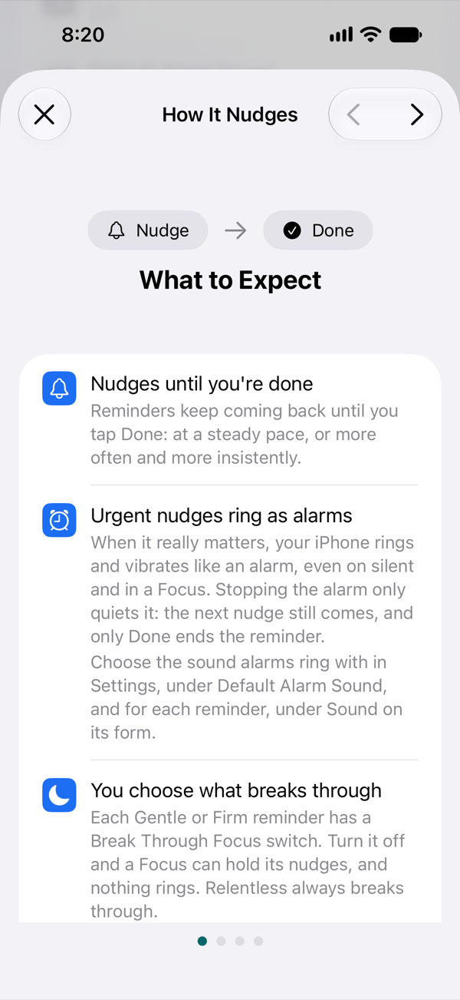
Gentle
Never rings as an alarm. At the Consistent pace, a nudge every 10 minutes: nudges 1 to 4 are Normal notifications, and nudges 5 to 20 are High. Twenty nudges over 3 hours and 20 minutes, then it gives up. During a Focus, Normal nudges wait until High, unless you allow Nudge-inator in that Focus.
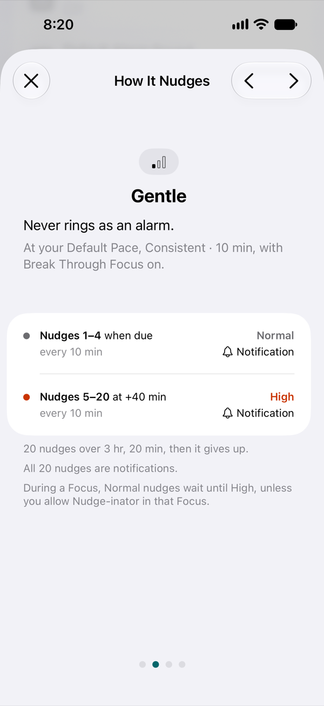
Firm
Rings as an alarm from nudge 4, with Break Through Focus on. At the Consistent pace: nudges 1 and 2 are Normal notifications, nudge 3 is a High notification, and nudges 4 to 20 are Urgent and ring as alarms.
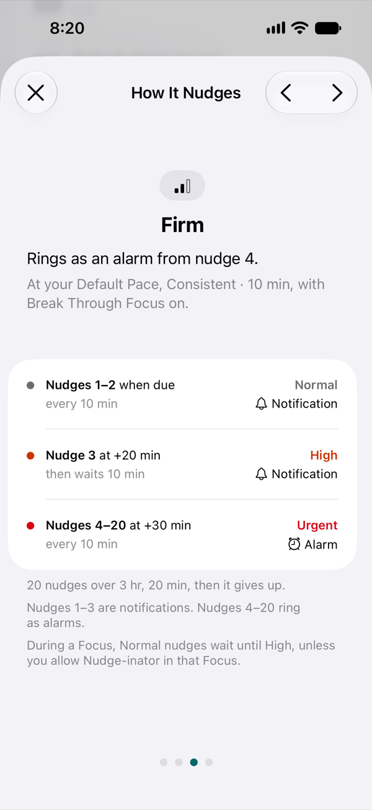
Relentless
Every nudge rings as an alarm: all 20, every 10 minutes at the Consistent pace.
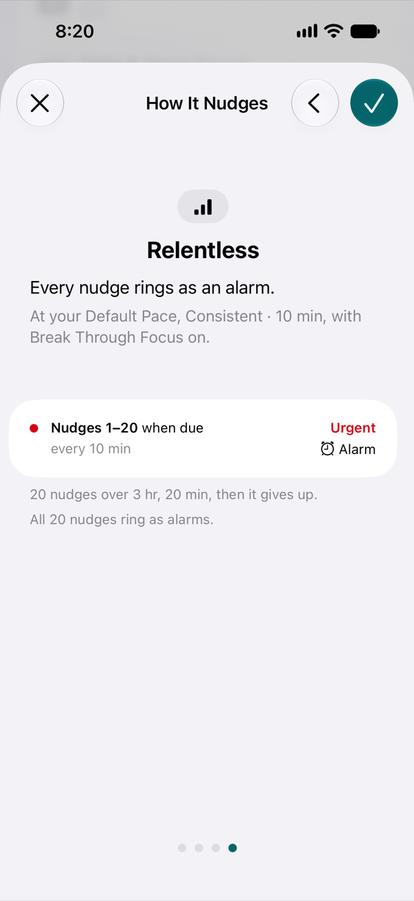
In the app, these schedules follow your own Default Pace, set in Settings.
How Alarm Sounds Work
Pick Your Default Sound
In Settings, under Default Alarm Sound, choose the sound your alarms ring with. Tap a tone to hear it: choose from six tones, from the gentle Chime to the insistent Siren. Default Alarm is iOS's own sound, which apps can't play, so you'll hear it when an alarm rings.
New reminders start with it, and so do reminders someone sends you. The reminders you already have keep their sounds.
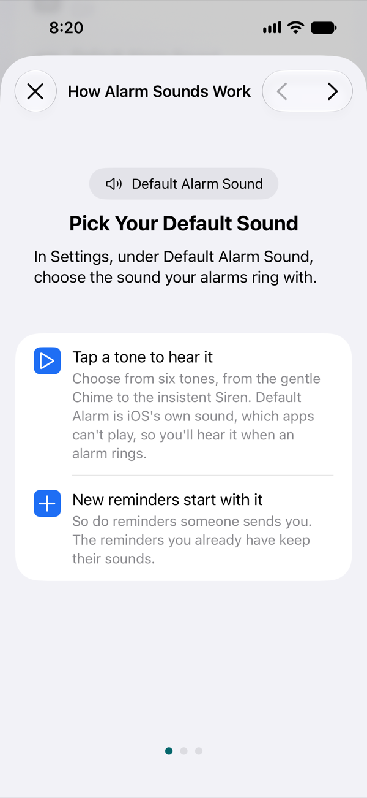
Change Your Reminders
Change the sound of reminders you already have, all at once or one at a time.
- Use for All Reminders, in Settings › Default Alarm Sound, gives every reminder you have the default, including ones people sent you.
- Sound on the form: edit a reminder and change its Sound, under Break Through Focus, even while it's nudging.
- Named on its details: a reminder's details name its sound, under Break Through Focus.
A reminder someone sends you rings with the sound chosen on your iPhone.
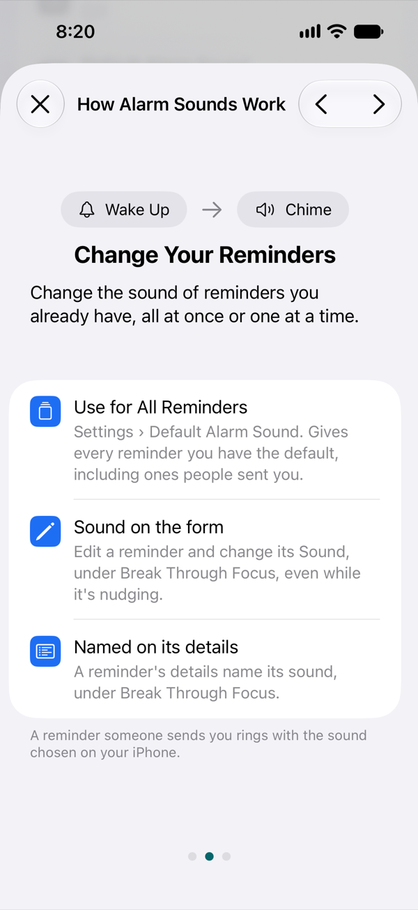
When It Plays
Your sound plays only when a nudge rings as an alarm: a Firm reminder's Urgent nudges with Break Through Focus on, and every Relentless nudge. A Gentle reminder, or a Firm one with Break Through Focus off, never rings, so it has no Sound row. Notifications use the standard sound, and so does every nudge while Alarms are off in iOS Settings.
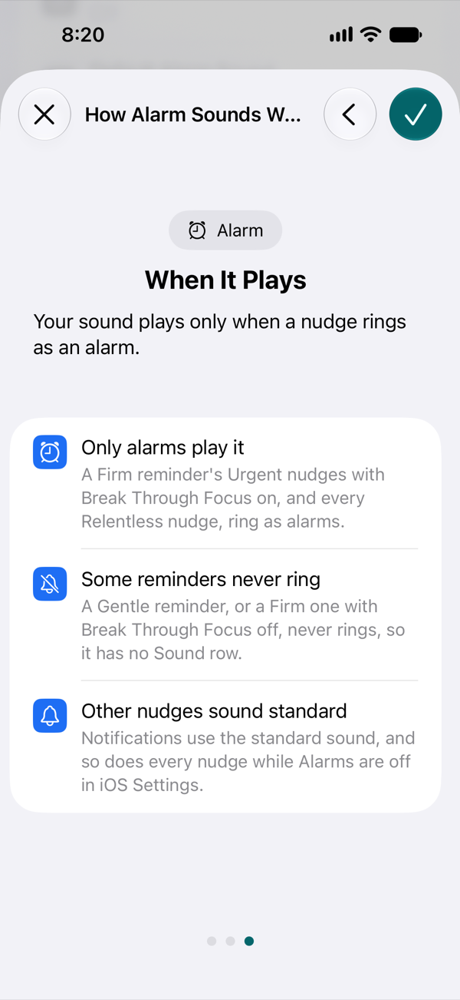
How Sharing Works
Send Each Other Reminders
Connect with someone you trust, and the reminders you send them nudge on their iPhone like their own. Sharing goes through iCloud, so each of you signs in to iCloud on your iPhone. You're connected only after one of you accepts the other's invite. Until then, nobody can send you a reminder.
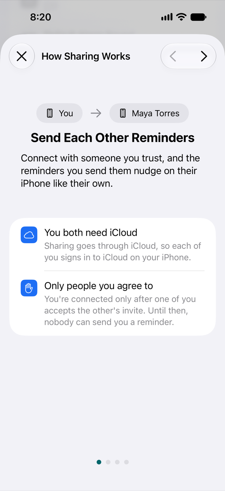
Connect
- Invite Someone: Settings › Connections. Enter the email address or phone number of their Apple Account.
- Send the Invite through Messages, Mail or Copy Link. Nothing is sent until you tap Send.
- They Accept: they open the invite on their iPhone, and you're both connected.
An invite opens only for the Apple Account it was sent to, and you both need the latest Nudge-inator.
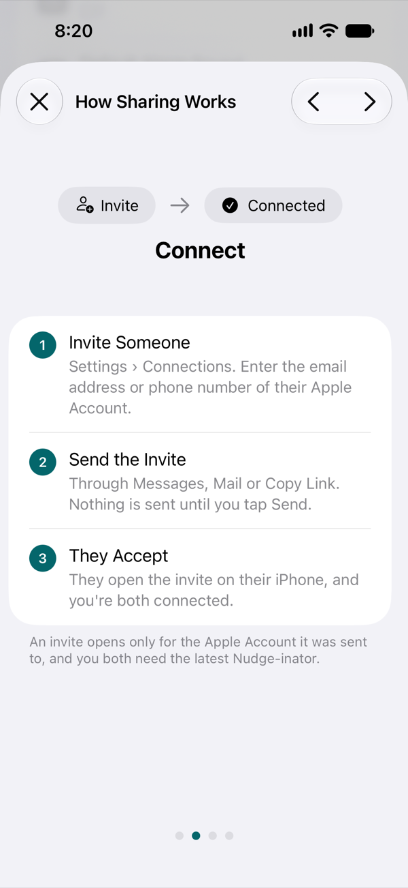
Send a Reminder
Pick Send To when you make a reminder, and choose who gets it. It nudges them at the strength you chose. It appears among their reminders, labeled From and your name, and they can mark it Done, pause it, remove it and tag it. Each person chooses, for each connection, whether reminders start right away or wait for them to accept first.
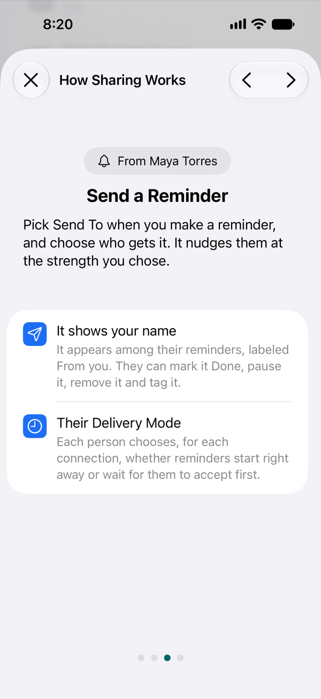
Who Sees What
- You own what you send: only you can change what it says or when it's due. They can't edit it.
- Status is their choice: with Status Sharing on, you see whether it's Done, Paused, Missed or Removed. With it off, you see only that it was Delivered.
- Disconnect any time in Settings › Connections. They choose to keep or remove the reminders you sent.
- Share Activity: Settings › Share Activity shows what happened to sharing that you'd otherwise never see.
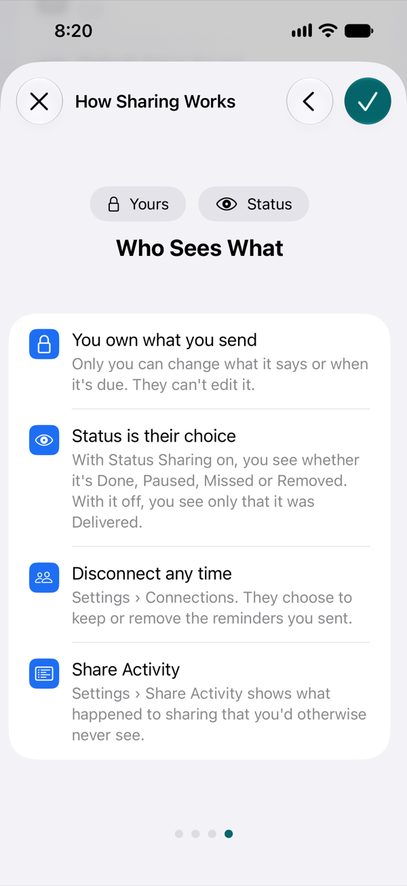
How Quiet Hours Work
Rest Without Nudges
A quiet hours schedule is a time, on the days you choose, when no nudge arrives.
- A start, an end and days: such as 10:00 PM to 7:00 AM, every day. A schedule that ends before it starts runs past midnight.
- Every nudge is held: notifications and alarms alike, even a Relentless reminder's. Quiet hours hold them all.
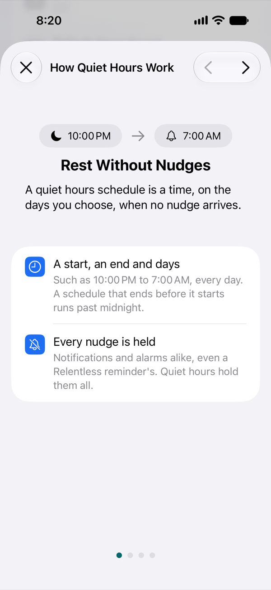
Quiet Now
The switch above your schedules, for quiet hours no schedule covers.
- Holds every nudge from the moment you turn it on until you turn it off, whatever your schedules say. It never ends by itself.
- Then your schedules apply: turn it off, and your schedules hold nudges again as before.
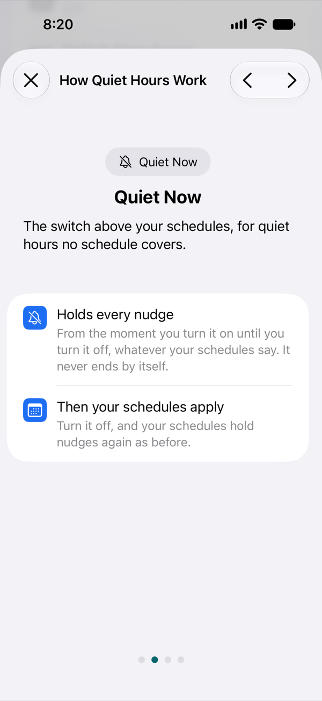
Your Schedules
Add as many as you need, such as one for weeknights and one for weekends.
- Add a Schedule: Settings › Quiet Hours. Tap +, choose the times and days, and tap Save.
- Change One: tap a schedule to change its times and days, or to delete it.
- Switch One Off: its switch turns it off and keeps it for later.
A change applies from now on. What was already sent or held stays as it was.
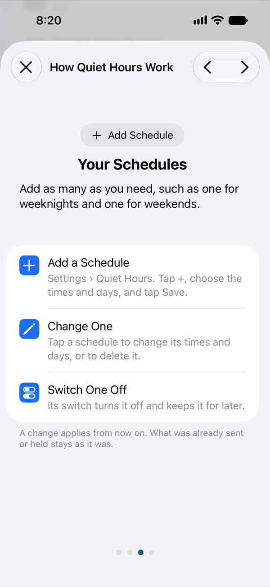
Held Nudges
A nudge that falls in quiet hours is held, and counts as one you didn't answer.
- Its reminder moves on: as if you'd swiped the nudge away, the next nudges come as planned, and the held ones count toward its limit.
- Nothing arrives late: when quiet hours end, the next nudge arrives on time. Held nudges aren't sent afterward.
- It can end as Missed: a reminder that reaches its limit while held ends as Missed, with a note such as "Quiet hours held 10 of its 20 nudges."
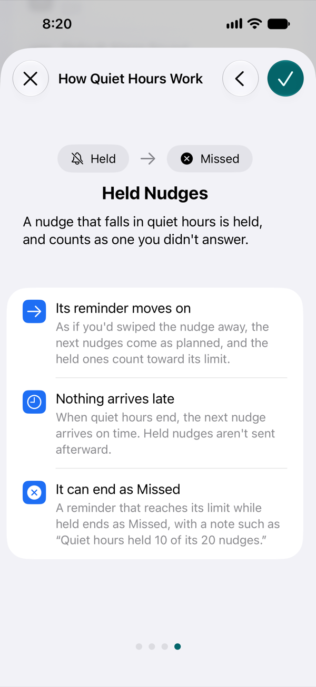
Common questions
Why do alarms ring through silent mode and Focus?
Each reminder has a Break Through Focus setting. When it's on, its nudges are sent as alarms, which sound through silent mode and Focus. When it's off, its nudges are ordinary notifications that a Focus can hold. A Relentless reminder always breaks through Focus.
Quiet hours are the exception. While they're on, no nudge arrives, alarms included. See How Quiet Hours Work.
How do I stop nudges?
Tap Done on the reminder. Stopping an alarm only silences that one ring, and the next nudge still comes on schedule.
To stop a reminder from nudging without losing it, pause it. Resume brings it back at its next due time.
To hold every nudge for a while, such as overnight, add a schedule in Settings › Quiet Hours, or turn on Quiet Now. Held nudges aren't sent later. Each counts as one you didn't answer.
Why did a reminder end as Missed during quiet hours?
A nudge held by quiet hours counts as one you didn't answer, so a reminder keeps moving toward its limit while they're on. If it reaches its limit while held, it ends as Missed, and a note says how many of its nudges quiet hours held, such as "Quiet hours held 10 of its 20 nudges."
Why didn't an invite open?
An invite opens only for the Apple Account it was sent to, and only in the latest Nudge-inator. During the beta, an invite can't lead to an App Store page, so install the latest build from TestFlight before you open it.
If it still doesn't open, the sender checks the email address or phone number of your Apple Account and taps Invite Again on your page in Settings › Connections.
How do I delete all my data?
Go to Settings › Delete All Data. It removes every reminder and cancels every nudge and alarm. Do this before you delete the app.
Why do alarms remain after I delete the app?
Deleting the app alone leaves its alarms scheduled on your iPhone. Use Settings › Delete All Data first, which cancels every nudge and alarm.
Your privacy
Nudge-inator has no account and no server of ours. Your own reminders stay on your iPhone, and reminders you send or receive through an approved share go through your iCloud. Read the Nudge-inator privacy policy for the details.